×
Category
Title
Description
Description
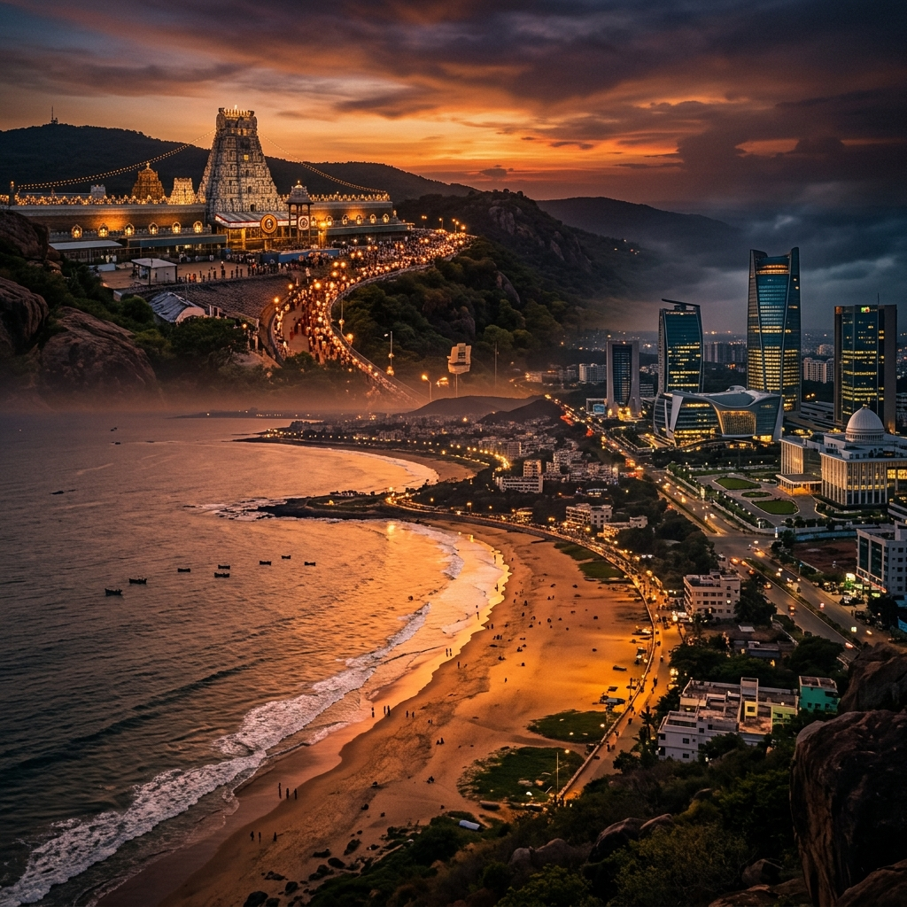
Where ancient whispers meet tomorrow's echoes.
Andhra Pradesh is a land where ancient temples whisper stories from the dawn of time, and the Bay of Bengal sings a ceaseless lullaby along its shores. This is India’s soulful southeast—a tapestry woven with fiery cuisine, graceful dance, and resilient spirit.
From the sacred hills of Tirumala to the bustling tech corridors of Visakhapatnam, the state marries deep-rooted tradition with an unstoppable drive toward tomorrow. It is a place where every spice tells a story, every monument echoes with empire, and every journey becomes a discovery.

Click on a pulsing hotspot to explore the details of this iconic location.
Andhra Pradesh stretches along India’s southeastern coast, cradled by the Bay of Bengal on the east. The coastline, nearly 975 kilometers long, is the state’s lifeline, gifting it fertile deltas, thriving ports, and sun-kissed beaches.
Two mighty rivers—the Godavari and the Krishna—carve lush green veins through the landscape, creating the rice bowls of the delta region. To the west, the Eastern Ghats rise in ancient, mineral-rich folds, sheltering misty valleys and biodiverse forests.
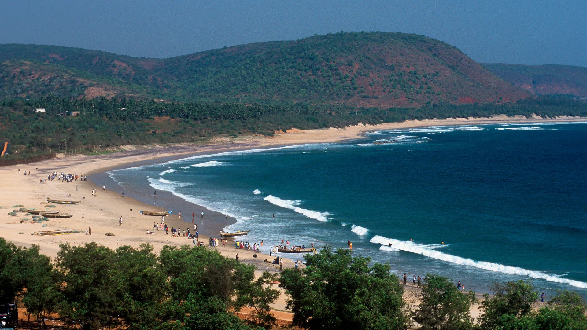
Andhra’s cultural heartbeat is loud, colorful, and deeply inclusive. From the quicksilver footwork of Kuchipudi to the intricate weaves of Dharmavaram, life here prizes hospitality and deep-rooted pride.
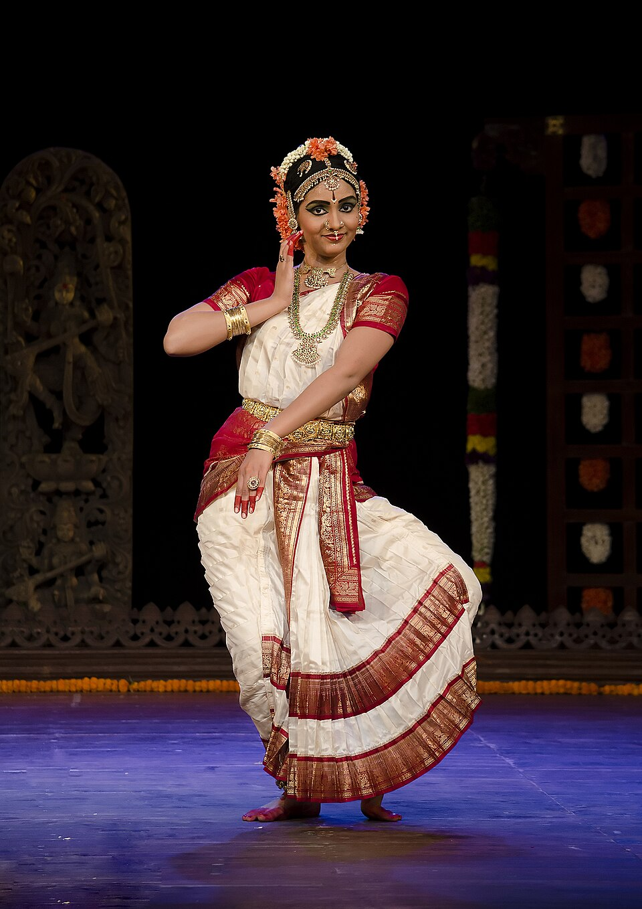
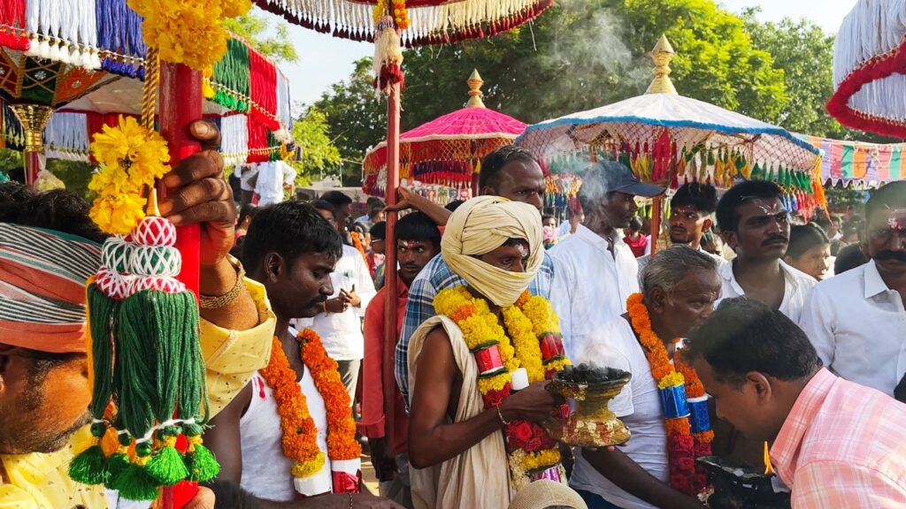
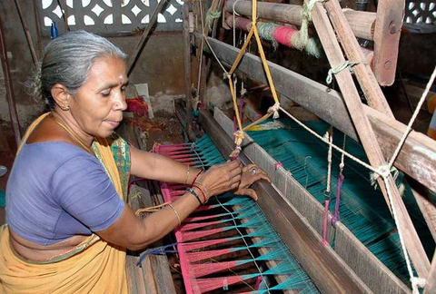
To eat in Andhra is to embrace fire with joy. Every meal is a testament to the belief that food should comfort, challenge, and celebrate life all at once.

Steaming rice, tangy pappu, and fiery avakaya pickles—a ritual of flavor.

Layered with tender meat and laced with local spices that rival any royal kitchen.

Prawn iguru and spicy crab masala from the Bay of Bengal.
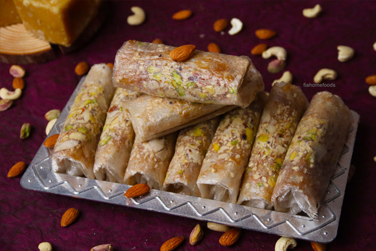
Tissue-thin Pootharekulu melting on the tongue like paper-thin tradition.


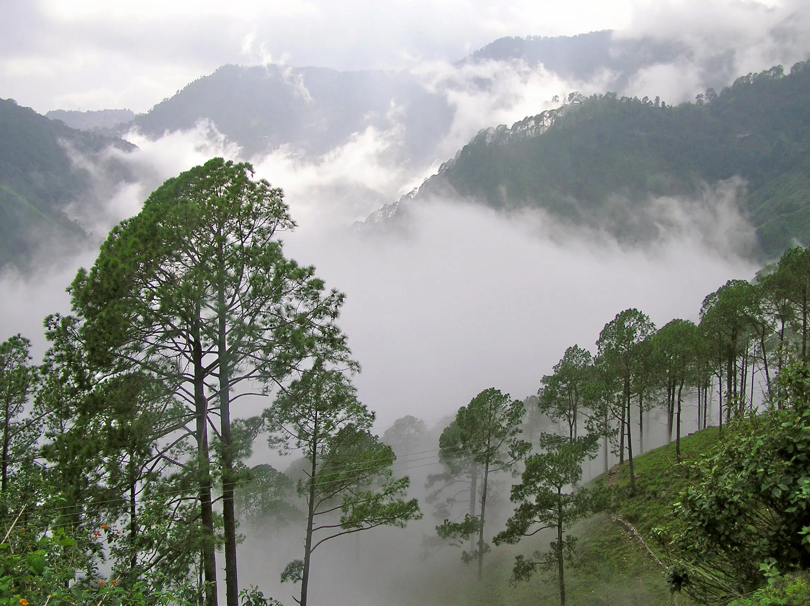


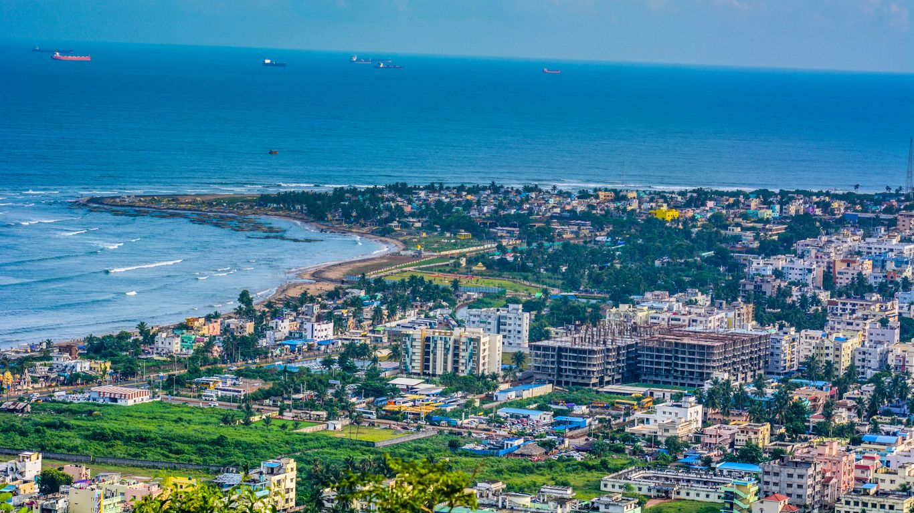
The crown jewel of the east coast. A major port and naval base that balances shipbuilding and software with golden beaches.
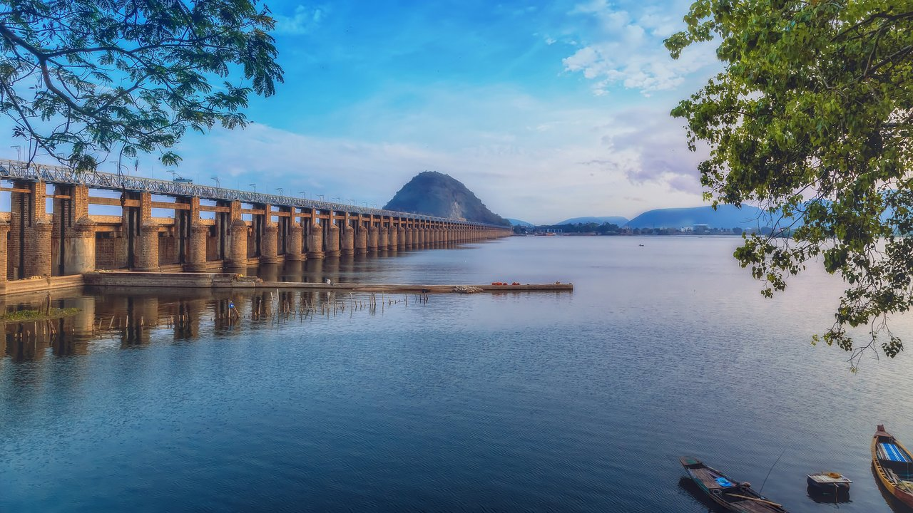
The commercial nerve center on the Krishna River, buzzing with entrepreneurial energy and home to the Kanaka Durga Temple.
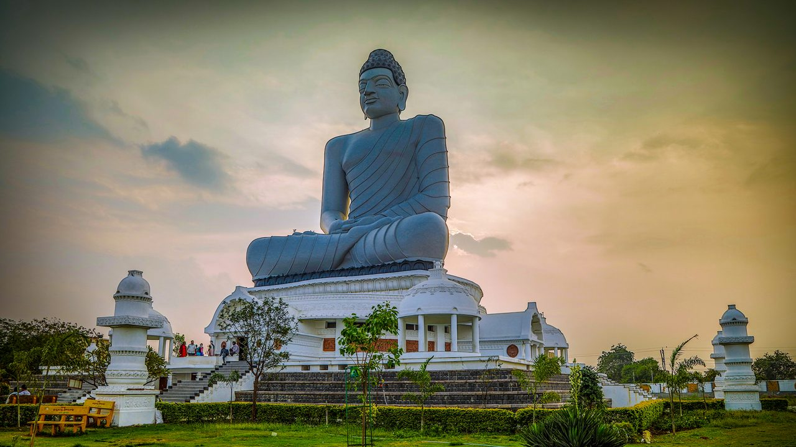
The ambitious new capital, reviving an ancient Buddhist metropolis and bridging a glorious past with a smart future.
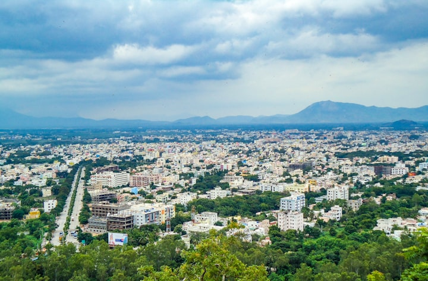
A holy city and spiritual powerhouse that welcomes the world to its sacred hills and ancient shrines.
Agriculture thrives on fertile deltas—rice, chilies, and mangoes lead the nation’s crop roster.

Shipbuilding, petrochemicals, and pharma hubs driving growth along the Visakhapatnam-Chennai corridor.

The IT and startup ecosystem is booming, driven by government innovation hubs and a digitally proactive workforce.


India’s primary orbital launch site, where missions soar into history.

One of India's major ports, a vital deep-water artery for global trade.

A century-old seat of learning overlooking the Bay of Bengal.

A premier institute driving innovation, research, and technological excellence in Andhra Pradesh
.jpg)
A premier institute fostering excellence in design, innovation, and creative problem-solving.
The Monolithic Nandi at Lepakshi is one of the largest in India, carved from a single granite stone.
Boasting the second longest coastline in India, Andhra is a gateway to the vast blue Bay of Bengal.
Pootharekulu, the 'Paper Sweet', is made of layers so thin they melt instantly—a craft of pure patience.
Andhra Pradesh is not a place you merely visit—it is a journey that seeps into your senses and stays long after you leave. The history is etched in stone, the future is written in progress, and the soul is found in the people.